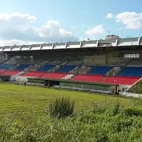
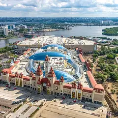
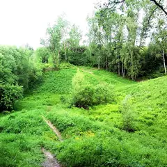
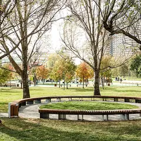

Районы · ЮАО
Куда сходить на юге Москвы
40 мест на юге Москвы: 8 развлечений, 8 компьютерных клубов, 5 ресторанов и кафе и 5 мест для прогулки. Например, «Коломенское», «Культурный центр ЗИЛ» и «Даниловский рынок». 19 готовых планов начинаются здесь. Больше всего мест у станций «Автозаводская», «Коломенская» и «Шаболовская».
- 40 мест
- 19 планов
- 8 клубов
Места 32
пр. Андропова, 39
Холмы над рекой, белая церковь Вознесения и деревянный дворец царя Алексея Михайловича.
Подробнее и маршрут: КоломенскоеПозвать сюда: Коломенское
Фото: Ludvig14, CC BY-SA 4.0 · Wikimedia Commons
Восточная ул., 4, корп. 1
Конструктивистский дворец культуры: спектакли, кино, лекции.
Подробнее и маршрут: Культурный центр ЗИЛПозвать сюда: Культурный центр ЗИЛ
Фото: NVO, CC BY-SA 3.0 · Wikimedia Commons
ул. Мытная, 74
Под бетонным куполом — фермерские прилавки и кафе с кухнями со всего мира. Фудкорт до 22:00, в пт–сб до 23:00.
Подробнее и маршрут: Даниловский рынокПозвать сюда: Даниловский рынок
Фото: Retired electrician, CC0 · Wikimedia Commons

Балаклавский просп., 33
Олимпийский конноспортивный комплекс у Битцевского леса: соревнования и прогулки верхом.
Подробнее и маршрут: КСК «Битца»Позвать сюда: КСК «Битца»
Фото: MadDog, CC BY-SA 4.0 · Wikimedia Commons

пр. Андропова, 1
Крытый и уличный парк: 65 аттракционов, билет на весь день от 3 000 ₽. 12:00–22:00.
Подробнее и маршрут: Остров мечтыПозвать сюда: Остров мечты
Фото: mos.ru, CC BY 4.0 · Wikimedia Commons
ул. Дольская, 1
Готический дворец, пруды и мосты. Красиво в любое время года, особенно на фото.
Подробнее и маршрут: ЦарицыноПозвать сюда: Царицыно
Фото: Корзун Андрей, CC BY-SA 3.0 · Wikimedia Commons

Бирюлёво Восточное
Деревья и кустарники со всего света на юге Москвы.
Подробнее и маршрут: Бирюлёвский дендрарийПозвать сюда: Бирюлёвский дендрарий
Фото: Akkit at Russian Wikipedia, общественное достояние · Wikimedia Commons
ул. Борисовские Пруды
Парк с каскадом прудов и набережной Москвы-реки в Братееве.
Подробнее и маршрут: Братеевский каскадный паркПозвать сюда: Братеевский каскадный парк
Фото: Brateevsky, CC BY-SA 4.0 · Wikimedia Commons
ул. Даниловский Вал, 22
Древнейший монастырь Москвы, резиденция патриарха. Рядом Даниловский рынок.
Подробнее и маршрут: Данилов монастырьПозвать сюда: Данилов монастырь
Фото: A.Savin, Free Art License · Wikimedia Commons
Донская пл., 1
Тихий монастырь за высокими стенами с некрополем и старым садом.
Подробнее и маршрут: Донской монастырьПозвать сюда: Донской монастырь
Фото: mos.ru, CC BY 4.0 · Wikimedia Commons
Ленинский просп., 18
Самоцветы, кристаллы и метеориты в бывшем манеже усадьбы Орловых у Нескучного сада.
Подробнее и маршрут: Минералогический музей ФерсманаПозвать сюда: Минералогический музей Ферсмана
Фото: Антон Черный, общественное достояние · Wikimedia Commons

просп. Андропова, Нагатинская пойма
Новый большой парк на полуострове рядом с «Островом мечты»: набережные, спортплощадки и велодорожки.
Подробнее и маршрут: Парк в Нагатинской поймеПозвать сюда: Парк в Нагатинской пойме
Фото: Parkkuzsad, CC BY-SA 4.0 · Wikimedia Commons
парк Тюфелева роща, Москва
Современный парк на месте ЗИЛа: террасы, водоёмы и смотровой холм.
Подробнее и маршрут: Тюфелева рощаПозвать сюда: Тюфелева роща
Фото: A.Savin, Free Art License · Wikimedia Commons
пр. Андропова, 11, корп. 2
Отреставрированный речной вокзал с набережной, крышей и экспозицией о реке.
Подробнее и маршрут: Южный речной вокзалПозвать сюда: Южный речной вокзал
Фото: MBH, CC BY-SA 4.0 · Wikimedia Commons
ул. Ленинская Слобода, 26
Новое
Фудхолл в корпусе бывшего завода «Динамо»: уличная еда со всего света, от дагестанских хинкалов до баббл-ти. Удобно большой компанией — каждый берёт своё.
ул. Ленинская Слобода, 5
Маленькая радушная Грузия у Автозаводской, вдали от туристического центра.
Варшавское ш., 34
Новое
Большие бани с 1938 года у «Нагатинской»: высший разряд с бассейном и джакузи, женский разряд и «Бани мира» — залы «Шале», «Тунис» и др. на 6–13 гостей.
Подробнее и маршрут: Варшавские баниПозвать сюда: Варшавские бани
Автозаводская ул., 18 (ТРЦ «Ривьера»)
Новое
Прогулка в абсолютной темноте внутри «Ривьеры»: час ориентируешься только на слух и руки, как незрячий человек. Сильные эмоции и долгий разговор после.
Подробнее и маршрут: Музей ТемнотыПозвать сюда: Музей Темноты
ул. Трофимова, 2/1
Новое
Иммерсивный квест в «психиатрической больнице» у «Автозаводской»: актёр-пациент бьётся о стены и прячется на шкафу. Только для крепких нервов.
Каширское ш., 61, корп. 3А
Огромный китайский ресторан на 600 мест: медуза в соусе и роботы, развозящие еду.
Автозаводская ул., 18 (ТРЦ «Ривьера»)
Новое
Гастропаб с 18 дорожками в ТРЦ «Ривьера»: снукер, пул, русский бильярд и караоке. Дорожка — 1 300–3 000 ₽/ч, есть подземная парковка. Пт–вс до полуночи.
Подробнее и маршрут: Ballers StreetПозвать сюда: Ballers Street
Кожевническая ул., 14, стр. 2
Новое
Зал на 300 мест у Павелецкой, известный «Женским стендапом»: комикессы, ведущий и кавер-группа на разогреве. Хороший вариант для девичника.
Варшавское ш., 30А
Новое
Картинг у «Нагатинской»: заезд на взрослом карте 8 л.с. — 1 400 ₽, двухместный карт — 1 700 ₽, можно прокатиться вдвоём. В будни с 10:00 до полуночи.
Каширское ш., 61Г
Новое
Мультиплекс у «Домодедовской» с одним из самых больших экранов Москвы — около 28 метров в ширину в зале IMAX. Место для блокбастеров, сеансы до глубокой ночи.
Подробнее и маршрут: Киномакс-ТитанПозвать сюда: Киномакс-Титан
5-й Донской пр., 23
Новое
Бильярдный клуб с рестораном: 34 стола для русского бильярда, пул и снукер. Стол — 700–1 300 ₽/ч, бесплатная парковка, есть школа бильярда. 11:00–01:00.
Электролитный пр., 7
Ресторан в стиле альпийского шале на большой зелёной территории на юге Москвы.
Варшавское ш.
Термы на юге Москвы: открытый бассейн с баром в воде, коллективные парения и рестораны.
ул. Мастеркова, 4
Новое
Ирландский паб сети Harat’s у «Автозаводской»: большие экраны, длинные столы под компанию, кикер и сцена для музыкантов по вечерам.
Подробнее и маршрут: Harat's Pub на АвтозаводскойПозвать сюда: Harat's Pub на Автозаводской
Нагатинская ул., 16
Новое
Паб с придуманной историей про плотника и его кота: главные футбольные матчи на экране, а между таймами — дартс, бирпонг, настолки и приставка.
Подробнее и маршрут: Purkin's Pub на НагатинскойПозвать сюда: Purkin's Pub на Нагатинской
просп. Андропова, 22
Новое
Скалодром у «Коломенской», можно без опыта: вводная тренировка с тренером — 1 900 ₽ за 90 минут, сплит на двоих — 6 500 ₽ в час. В будни до 23:00.
ул. Шаболовка, 59, корп. 1А
Лаунж-бар с DJ, стендапом и танцполом. До 03, в пт–сб до 05.
4-й Кожевнический пер., 4
Минималистичная кофейня у Павелецкой: эклеры, круассаны и сэндвичи. 8–19.


Готовые планы 18 из 19
- Культурный центр ЗИЛ · Культурный центр · м. Автозаводская
- 13 минут пешкомStrEAT · Фудхолл
Лекция или кино в конструктивистском ДК ЗИЛ, а потом фудхолл StrEAT в корпусе завода «Динамо»: дагестанские хинкалы или баббл-ти — каждый берёт своё.
Открыть план: ДК ЗИЛ и уличная едаПозвать сюда: ДК ЗИЛ и уличная еда
Фото: NVO, CC BY-SA 3.0 · Wikimedia Commons
- Культурный центр ЗИЛ · Культурный центр · м. Автозаводская
- 8 минут пешкомАвлабар · Грузинский ресторан
Конструктивистский дворец культуры ЗИЛ и хинкали в «Авлабаре» у Автозаводской.
Открыть план: ДК ЗИЛ и ГрузияПозвать сюда: ДК ЗИЛ и Грузия
Фото: NVO, CC BY-SA 3.0 · Wikimedia Commons
- Коломенское · Музей-заповедник · м. Коломенская
- 19 минут пешкомF5 Коломенская · Компьютерный клуб
Холмы над рекой, белая церковь Вознесения и деревянный дворец царя Алексея Михайловича, а ближе к вечеру катки в F5 у «Коломенской», 19 минут пешком.
Открыть план: Коломенское и F5Позвать сюда: Коломенское и F5
Фото: Ludvig14, CC BY-SA 4.0 · Wikimedia Commons
- Colizeum Шаболовка · Компьютерный клуб · м. Шаболовская
- 15 минут пешкомДаниловский рынок · Рынок
Colizeum у Шуховской башни на полсотни ПК, а потом пятнадцать минут пешком — и фудкорт Даниловского рынка с кухнями со всего мира (до 22:00, в пт–сб до 23:00).
Открыть план: Шаболовка: катка у башни и Даниловский рынокПозвать сюда: Шаболовка: катка у башни и Даниловский рынок
Фото: Retired electrician, CC0 · Wikimedia Commons
- КСК «Битца» · Конноспортивный комплекс · м. Чертановская
Прогулка верхом или соревнования в олимпийском конноспортивном комплексе.
Открыть план: Верхом в БитцеПозвать сюда: Верхом в Битце
Фото: MadDog, CC BY-SA 4.0 · Wikimedia Commons
- Даниловский рынок · Рынок · м. Тульская
Под бетонным куполом кафе с кухнями со всего мира: берёте понемногу и пробуете по кругу. Фудкорт до 22:00, в пт–сб до 23:00.
Открыть план: Гастротур по ДаниловскомуПозвать сюда: Гастротур по Даниловскому
Фото: Retired electrician, CC0 · Wikimedia Commons
- Коломенское · Музей-заповедник · м. Коломенская
В Коломенском — Голосов овраг с камнями-валунами и байками про туман, в котором «теряется время». Осенью тут особенно атмосферно.
Открыть план: Голосов овраг и легендыПозвать сюда: Голосов овраг и легенды
Фото: Ludvig14, CC BY-SA 4.0 · Wikimedia Commons
- Царицыно · Музей-заповедник · м. Царицыно
Псевдоготический дворец Баженова и Казакова, мосты и пруды в жёлтых листьях. К закату становится по-хорошему мрачно.
Открыть план: Готика Царицына в листопадПозвать сюда: Готика Царицына в листопад
Фото: Корзун Андрей, CC BY-SA 3.0 · Wikimedia Commons
- Comedy Hall · Стендап-клуб · м. Павелецкая
- 9 минут пешкомCity Space · Панорамный бар
«Женский стендап» в Comedy Hall у Павелецкой — комикессы и кавер-группа на разогреве, — а потом круглый бар City Space на 34-м этаже с видом на реку.
Открыть план: Женский стендап и бар на 34-м этажеПозвать сюда: Женский стендап и бар на 34-м этаже
- Lonato · Картинг · м. Нагатинская
- 6 минут пешкомВаршавские бани · Баня
- 20 минут пешкомШале · Ресторан
Заезды на картах Lonato у «Нагатинской», потом в соседние Варшавские бани 1938 года с бассейном и джакузи, а ужин — в альпийском «Шале» минутах в двадцати пешком.
Открыть план: Картинг, баня и шалеПозвать сюда: Картинг, баня и шале
- Остров мечты · Парк развлечений · м. Технопарк
Горки и аттракционы на весь день: один билет — катайтесь сколько хотите.
Открыть план: Остров мечтыПозвать сюда: Остров мечты
Фото: mos.ru, CC BY 4.0 · Wikimedia Commons
- Остров мечты · Парк развлечений · м. Технопарк
Американские горки вместо кино: вместе кричать на виражах сближает.
Открыть план: Остров мечты на весь деньПозвать сюда: Остров мечты на весь день
Фото: mos.ru, CC BY 4.0 · Wikimedia Commons
- Музей Темноты · Музей в темноте · м. ЗИЛ
- 3 минуты пешкомBallers Street · Боулинг
Час в абсолютной темноте в «Ривьере», где идёшь только на звук и держась за руки, а потом в том же ТРЦ — боулинг и бильярд в Ballers Street.
Открыть план: Прогулка в темноте и боулингПозвать сюда: Прогулка в темноте и боулинг
- Чистый разум · Хоррор-квест · м. Автозаводская
- 15 минут пешкомStrEAT · Фудхолл
Иммерсивный квест «Чистый разум», где актёр-пациент бьётся о стены и прячется на шкафу, а потом выдохнуть в фудхолле StrEAT в корпусе завода «Динамо».
Открыть план: Психбольница и фудхоллПозвать сюда: Психбольница и фудхолл
- Царицыно · Музей-заповедник · м. Царицыно
Готический дворец, мосты и пруды — красивые кадры в любое время года.
Открыть план: Фотопрогулка в ЦарицынеПозвать сюда: Фотопрогулка в Царицыне
Фото: Корзун Андрей, CC BY-SA 3.0 · Wikimedia Commons
- Коломенское · Музей-заповедник · м. Коломенская
Длинная прогулка над рекой, белая церковь Вознесения и деревянный царский дворец.
Открыть план: Холмы КоломенскогоПозвать сюда: Холмы Коломенского
Фото: Ludvig14, CC BY-SA 4.0 · Wikimedia Commons
- Colizeum Каширская Плаза · Компьютерный клуб · м. Домодедовская
- 11 минут пешкомШанхай · Китайский ресторан
Клуб у «Домодедовской» и китайский ресторан в десяти минутах пешком.
Открыть план: Каширская Плаза и китайская кухняПозвать сюда: Каширская Плаза и китайская кухня
- Шанхай · Китайский ресторан · м. Домодедовская
Ресторан на 600 мест, где еду развозят роботы, — для большой компании.
Открыть план: Китай с роботамиПозвать сюда: Китай с роботами
Компьютерные клубы 8
просп. Андропова, 22 (ТРЦ «Нора», 3 этаж)
Круглосуточно
Круглосуточная киберарена на третьем этаже ТРЦ «Нора» у «Коломенской».
Подробнее и маршрут: Colizeum НораПозвать сюда: Colizeum Нора
ул. Шухова, 21
Большой клуб у Шуховской башни: 37 ПК на RTX 5060, 8 на RTX 5070 и буткемп.
Подробнее и маршрут: Colizeum ШаболовкаПозвать сюда: Colizeum Шаболовка
ул. Вавилова, 3 (ТРЦ «Гагаринский»)
Один из самых известных клубов сети в ТРЦ у «Ленинского проспекта»: по будням дешевле, чем в выходные.
Подробнее и маршрут: Colizeum ГагаринскийПозвать сюда: Colizeum Гагаринский
Каширское ш., 61Г (ТЦ «Каширская Плаза»)
Клуб в торговом центре у «Домодедовской».
Подробнее и маршрут: Colizeum Каширская ПлазаПозвать сюда: Colizeum Каширская Плаза
Варшавское ш., 135Б (ТЦ «Меримис»)
Клуб в ТЦ «Меримис» на Варшавке: мощные ПК, VIP-буткемпы, PlayStation 5 и бар с горячей едой.
Подробнее и маршрут: Colizeum МеримисПозвать сюда: Colizeum Меримис
просп. Андропова, 38
F5 у «Коломенской»: днём — прогулка по Коломенскому, вечером — катки.
Подробнее и маршрут: F5 КоломенскаяПозвать сюда: F5 Коломенская
Кировоградская ул., 13А (ТРЦ «Columbus», 4 этаж)
Киберарена на четвёртом этаже «Колумбуса» в двухстах метрах от «Пражской».
Подробнее и маршрут: Colizeum ColumbusПозвать сюда: Colizeum Columbus
Кировоградская ул., 9, корп. 1 (2 этаж)
Клуб сети F5 у «Южной» — недорогие ночные пакеты.
Как позвать
- Выбери план, место или событие — в карточке адрес, цены и маршрут в Яндекс Картах.
- Нажми «Позвать сюда» — соберётся приглашение-игра для свидания или голосование для компании.
- Отправь ссылку в любой мессенджер: тебе ответят, а компания отметит, куда и когда может. Бесплатно и без регистрации.